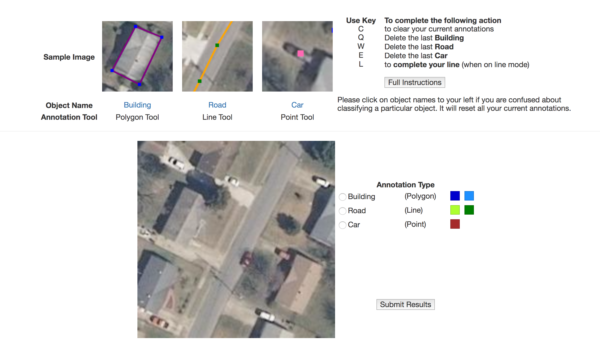

General Instructions
Welcome! In this HIT, we will ask you to mark several objects in an image. We will be asking you to annotate objects that would indicate whether or not a community has access to electricity. Please follow the instructions below:
- Read these instructions carefully. When you have completed them, click the "Annotate" button at the bottom of the page. This will take you to a page where you can annotate an image. These instructions are the same every time you complete this task, however, so if you have done this task multiple times, feel free to skip.
- You will see a table at the top of the screen which will tell you what and how to annotate. The rows of the table will be:
- Sample image of what the object looks like
- Name of Object
- Tool to Annotate that object
See the Example Below:

- When you are ready to begin annotating, select the radio button next to the name of the object you will be annotating.
- If you are confused about what qualifies as a specific object or are otherwise uncertain, please click on the object name right below it's sample image. It will take you to a page with more information about the object.
- When you need to switch tools, click on a different radio button.
- Hit submit once you have finished your annotations.
Notes
- If you mess up the annotation you are currently working on, hit "C" to reset
- You will be unable to change your annotation type while in the middle of making a line or polygon
- The colors next to the name of the object you are annotating indicate the color the shape will be once the object is completed.
Using the Tools
Polygon
- Click on the edge of the object you would like to outline.
- Click around the perimter of the object you wish to outline
- Click on the first vertex to close the polygon
- Your polygon will turn from cyan and red to the colors next to the object's name because it is complete.
- You will be allowed to switch tools
Line
- Click at the start of the line you would like to draw
- Keep clicking along the path you wish to draw
- Hit "L" to complete the line once you have finished outlining it.
- Your polygon will turn from cyan and red to the colors next to the object's name because it is complete.
- You will be allowed to switch tools
Point
- Click where you would like to drop your point
- If you need to take back a point, reference the table in the top right corner of the screen that will tell you what key to press in order to get rid of your annotation